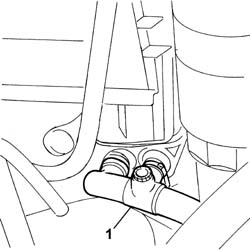
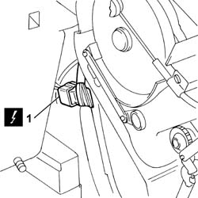
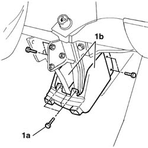
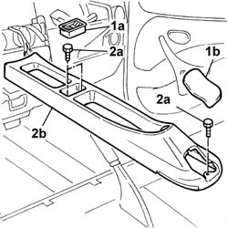
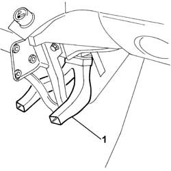
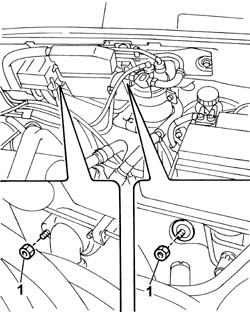
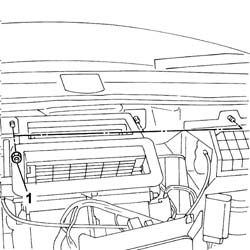

5020A12 heater casing - r+r with facia removed
- Path
- Procedures > 50 AUXILIARY UNITS > 5020 HEATER > 5020A box and components > 5020A12 heater casing - r+r with facia removed
- Kind
- repair procedure (removal / refitting; the operation number is the code)
- Applies to
- all engines; all production periods
- Interactive page
- https://sloeber94.github.io/elrnDB-fDbl/en/#/2584802
Applies to: all engines; all production periods
 Removing
Removing
 Refitting
RefittingFit a suitable container for coolant recovery.
Disconnect the lower radiator pipe and drain the engine coolant into the container.
After completing draining, reconnect the radiator's bottom pipe.
1. Disconnect the water delivery and return pipes to the heater box.

Applies to: all engines; all production periods
1. Disconnect the electrical connections.
Name | Connector | |
|---|---|---|
1 | Front/air conditioning - heater coupling |

Applies to: all engines; all production periods
1. Undo the bolts (1a) and remove the side guards (1b) of the heater box air diffuser.

Applies to: all engines; all production periods
1. Remove the coin holder (1a) and the protective cap (1b) behind the handbrake lever.
2. Undo the bolts (2a) and push the tunnel backwards (2b).

Applies to: all engines; all production periods
1. Remove the air diffuser.

Applies to: all engines; all production periods
1. Undo the nuts securing the heater box in the engine compartment.

Applies to: all engines; all production periods
1. Undo the nuts securing the heater box on the interior compartment side.

Applies to: all engines; all production periods
Carefully remove the heater unit.
Applies to: all engines; all production periods
Refitting
RemovingFit the heater unit.
Tighten the nuts securing the heater box, interior compartment side and engine side.
Fit the air diffuser.
Refit the central tunnel and secure it with the fixing bolts.
Fit the side guards on the air diffuser of the heater box.
Connect the electrical connection
 | Name | Connector |
|---|---|---|
- | Front/air conditioning - heater coupling |
Connect the water delivery and return pipes to the heater box, and secure them with new retaining bands.
Op. 1040A32 HOSE CONNECTING FUEL FILLER PIPE TO TANK - R.R.
Op. 1088A30 ENGINE COOLING SYSTEM - DRAIN AND REFILL CIRCUIT WITH BLEED AIR
Topics linked from this page (3)
- 1040A32 fuel filler pipe union sleeve - r + r
- 1088A30 ENGINE COOLING SYSTEM - draining and refilling circuit and bleeding air
- D008 FRONT/AIR CONDITIONING-HEATER COUPLING